Tools yang biasa dipakai
Berikut ini beberapa tools dan teknologi yang biasa saya gunakan dalam pengembangan IoT, embedded systems, automation, dan web development.

Visual Studio Code
Code Editor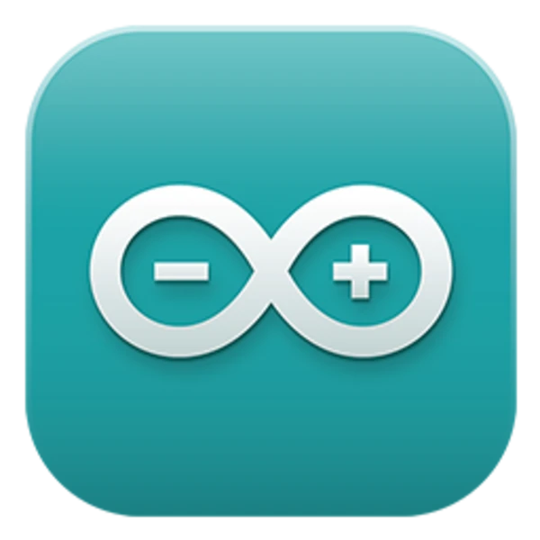
Arduino IDE
Microcontroller Platform
Python
Programming LanguageFritzing
PCB Design Software
Canva
Design PlatformAutodesk EAGLE
PCB Design Software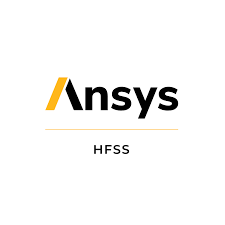
Ansys
Simulation Software/app desain
GitHub
Version ControlVercel
Deployment PlatformDaftar Proyek
Smart Shopping Trolley
Automated Logistic Trolley Berbasis ESP32
Proyek tugas akhir ini berfokus pada perancangan dan implementasi automated logistic trolley berbasis line follower untuk meningkatkan efisiensi dan keamanan sistem logistik pergudangan. Sistem dikembangkan menggunakan metode Differential Drive Mobile Control yang mengatur kecepatan roda kiri dan kanan secara independen agar trolley dapat bergerak maju, mundur, dan berbelok secara presisi. Navigasi otomatis dilakukan menggunakan sensor line follower untuk mengikuti jalur distribusi, sementara sensor ultrasonic digunakan untuk mendeteksi hambatan demi meningkatkan keselamatan operasional. Trolley dikendalikan oleh mikrokontroler ESP32 yang terintegrasi dengan teknologi Internet of Things (IoT), sehingga monitoring dan notifikasi status dapat dilakukan secara real-time melalui Telegram. Selain mode otomatis, sistem juga dilengkapi mode manual berbasis joystick Bluetooth sebagai kontrol cadangan. Berdasarkan hasil pengujian, seluruh sistem bekerja dengan baik, mulai dari kestabilan catu daya, akurasi sensor ultrasonic, komunikasi Telegram yang berhasil 100%, hingga koneksi Bluetooth yang tetap stabil pada berbagai jarak. Pengujian sistem gerak menunjukkan trolley mampu membawa beban hingga 45 kg dengan performa yang sesuai perancangan. Melalui proyek ini, saya mempelajari pengendalian motor differential drive, integrasi sensor dan IoT, komunikasi nirkabel, serta pengembangan sistem otomasi berbasis embedded system untuk aplikasi industri logistik.
FITUR UTAMA
- Line Follower Navigation
- Obstacle Detection System
- Telegram IoT Monitoring
- Bluetooth Manual Control
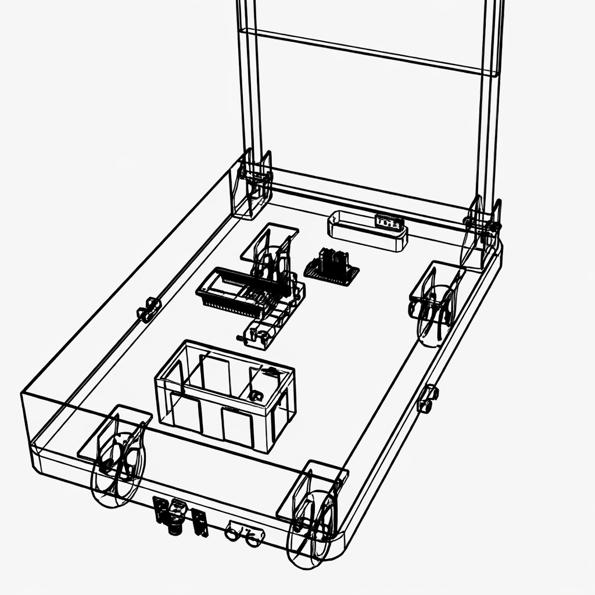
System Architecture
Gambar tersebut merupakan desain konseptual smart trolley berbasis sistem embedded yang dirancang untuk mendukung pergerakan otomatis dan navigasi cerdas. Desain memperlihatkan susunan komponen utama seperti roda penggerak, sensor ultrasonik, baterai, mikrokontroler, serta modul kontrol yang ditempatkan secara terintegrasi pada rangka troli. Struktur ini dibuat untuk mendukung sistem monitoring, kontrol motor, dan komunikasi data sehingga trolley dapat bergerak secara otomatis, stabil, dan responsif terhadap lingkungan sekitar.
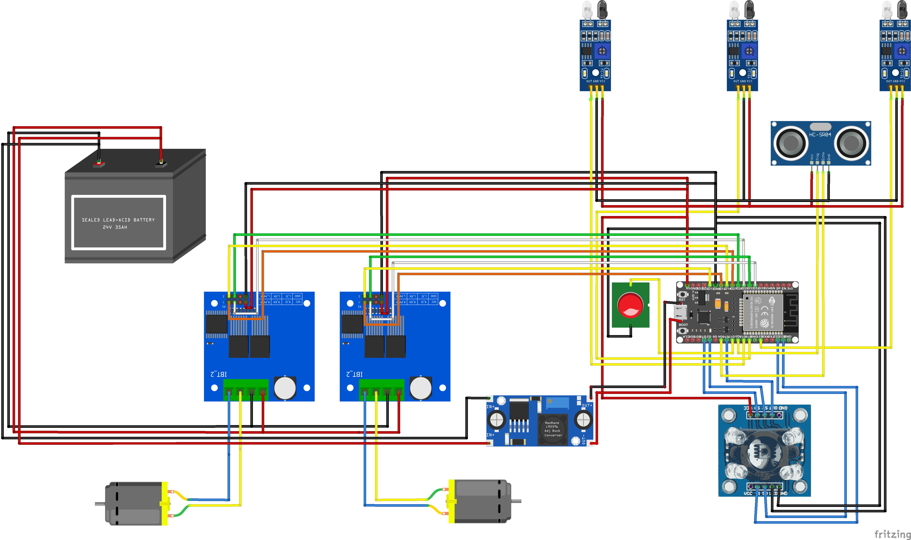
Hardware Wiring
Rangkaian ini menampilkan sistem lengkap robot pemindah barang yang menggunakan ESP32 sebagai pengontrolnya, dan dioperasikan melalui aplikasi telegram. Sistem ini terdiri dari beberapa komponen utama, termasuk sensor ultrasonik untuk deteksi hambatan, Wiring sensor, motor driver, dan sistem kontrol ini didesain menggunakan Fritzing untuk memudahkan visualisasi dan implementasi.
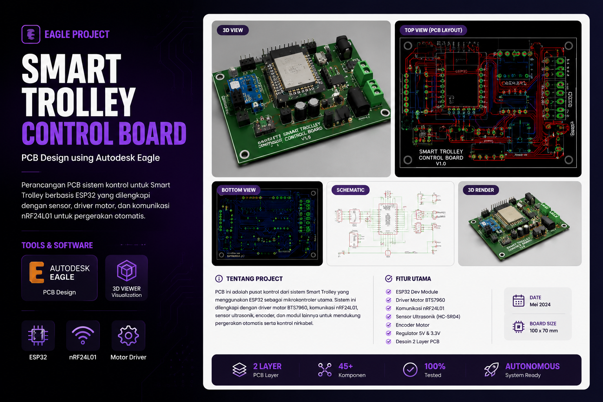
PCB Design
Visualisasi pada gambar menampilkan schematic, layout PCB, serta render 3D yang menggambarkan proses perancangan hingga implementasi hardware secara terintegrasi untuk menghasilkan sistem kontrol yang efisien, stabil, dan siap digunakan pada aplikasi otomasi cerdas, Board ini dikembangkan menggunakan Autodesk Eagle dengan konfigurasi 2-layer PCB dan mengintegrasikan Mikronkontroler ESP32 dengan berbagai modul seperti driver motor BTS7960, dan sensor lainnya.
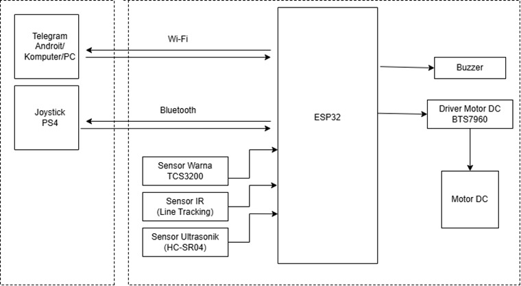
System Design Diagram
Perancangan sistem menunjukkan arsitektur kendali smart trolley yang berpusat pada mikrontroler ESP32 sebagai otak utama. Sistem ini mengintegrasikan sensor ultrasonik untuk deteksi hambatan, sensor line follower untuk navigasi otomatis, serta modul komunikasi IoT untuk monitoring dan kontrol jarak jauh melalui Telegram. Desain ini memastikan trolley dapat bergerak secara otomatis, stabil, dan responsif terhadap lingkungan sekitar dengan kemampuan monitoring real-time.
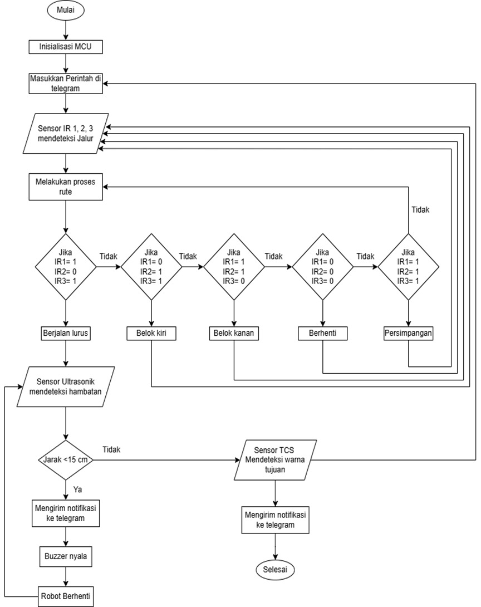
System Work Diagram
Diagram ini menjelaskan alur kerja sistem smart trolley, mulai dari inisialisasi sistem, pembacaan sensor, pengambilan keputusan berdasarkan data sensor, hingga eksekusi perintah untuk menggerakkan trolley secara otomatis. Sistem ini juga mencakup mekanisme komunikasi IoT untuk monitoring dan kontrol jarak jauh melalui Telegram, serta mode manual berbasis Bluetooth sebagai kontrol cadangan.
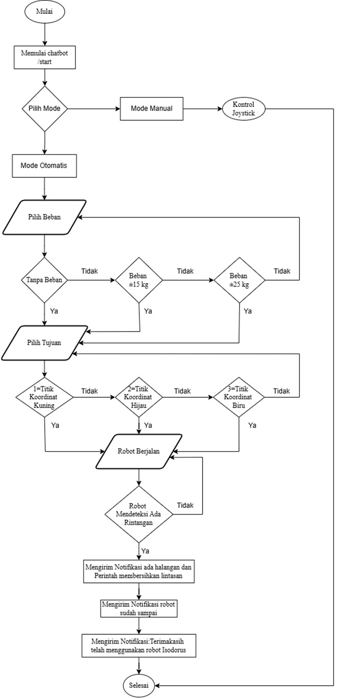
Command Flow Diagram
Flowchart ini menggambarkan bagaimana robot bergerak berdasarkan sistem alur perintah pada sistem Telegram dimulai ketika pengguna mengirim perintah /start untuk mengaktifkan sistem kemudian robot akan memulai proses inisialisasi dan pembacaan sensor. Jika perintah /manual diterima, sistem akan beralih ke mode manual dan menunggu input dari joystick Bluetooth. Jika perintah /auto diterima, sistem akan beralih ke mode otomatis dan mulai mengikuti jalur line follower serta mendeteksi hambatan menggunakan sensor ultrasonik. Sistem juga akan mengirim notifikasi status secara real-time melalui Telegram untuk monitoring.
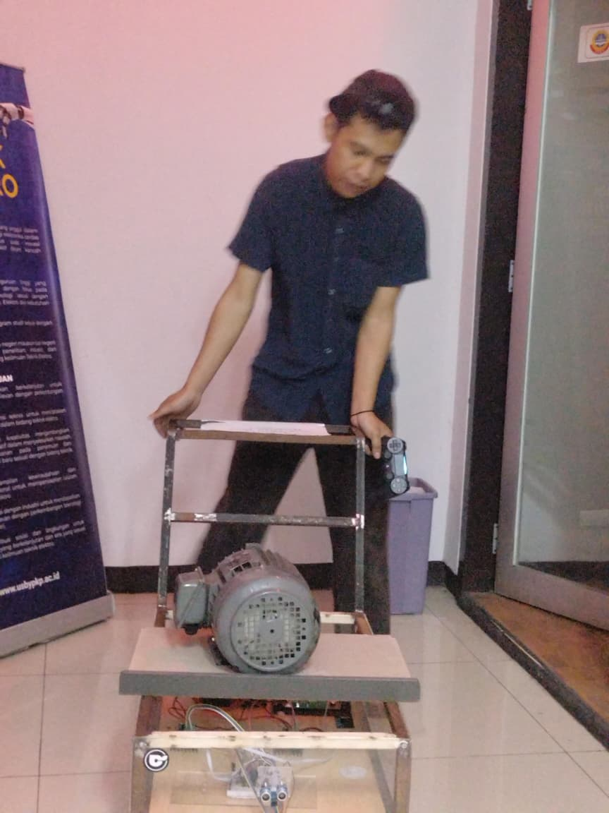
Pengujian Trolley dengan beban maksimal (45 kg)
pengujian sistem gerak menunjukkan trolley mampu membawa beban hingga 45 kg dengan performa yang sesuai perancangan untuk mengetahui kestabilan dan kemampuan trolley dalam membawa beban berat.

Testing Phase
Tampak belakang trolley saat fase pengujian.

Testing Phase
Tampak depan trolley saat fase pengujian.

Testing Phase
Tampak samping trolley saat fase pengujian.

Testing Phase
Tampak keseluruhan trolley saat fase pengujian.
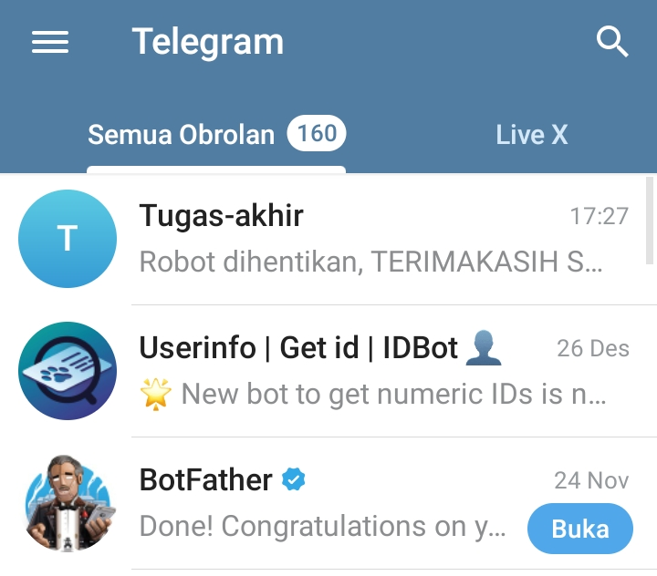
Final Implementation
Mendapatkan akun trolley dari aplikasi Telegram.
Optimasi Faktor Daya pada Sistem Kelistrikan Industri
Implementasi Kapasitor Bank pada Sistem Industri
Proyek ini berfokus pada analisis efektivitas pemasangan kapasitor bank dalam meningkatkan efisiensi sistem kelistrikan di PT. Berkat Sinar Perkasa. Dalam proyek magang ini, saya melakukan pengukuran dan analisis parameter listrik sebelum dan sesudah pemasangan kapasitor bank, seperti daya aktif, daya reaktif, daya semu, dan faktor daya sistem. Hasil pengujian menunjukkan bahwa faktor daya berhasil meningkat dari 0,72 menjadi 0,92 setelah pemasangan kapasitor bank, yang menandakan berkurangnya beban induktif dan konsumsi daya reaktif pada sistem. Peningkatan faktor daya ini membantu menurunkan arus listrik, mengurangi rugi-rugi daya, meningkatkan efisiensi distribusi energi, serta mengurangi biaya listrik akibat penalti dari penyedia listrik. Melalui proyek ini, saya mempelajari analisis sistem tenaga listrik, optimasi faktor daya, serta implementasi solusi efisiensi energi pada lingkungan industri.
FITUR UTAMA
- Power Factor Analysis
- Capacitor Bank Optimization
- Industrial Electrical Monitoring
- Reactive Power Reduction
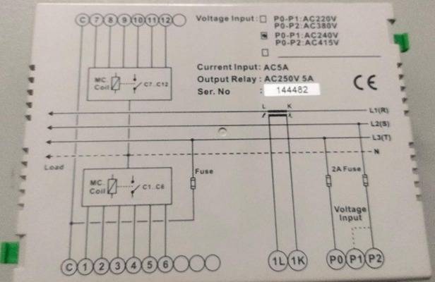
Hardware Wiring
diagram perkabelan yang digunakan untuk sistem kontrol dan proteksi pada kapasitor bank atau panel distribusi utama LVMDP (Low Voltage Main Distribution Panel)
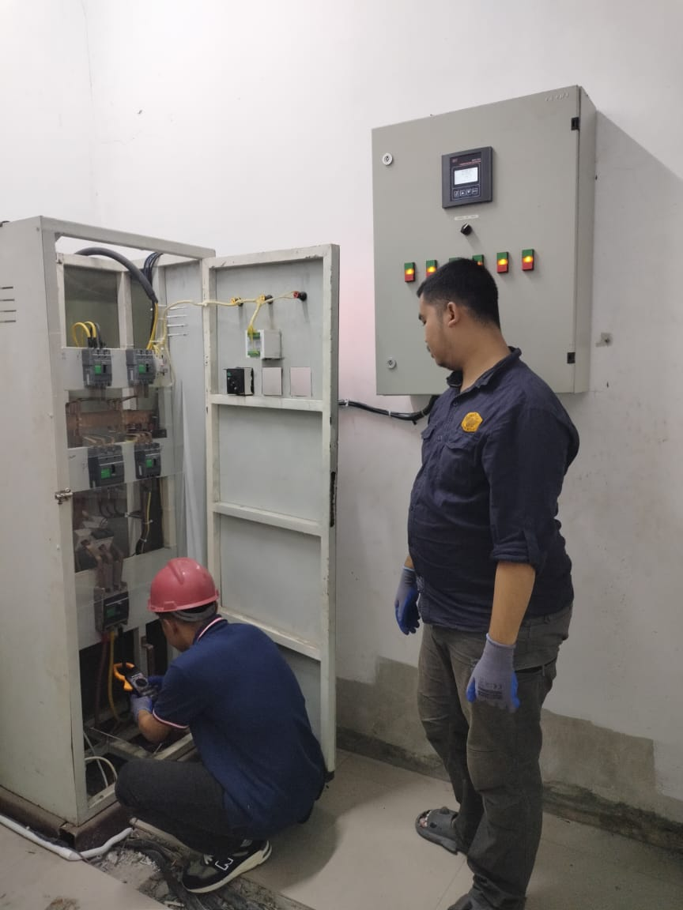
Dokumentasi Tim Maintenance
proses pemeliharaan panel kapasitor bank, yang dilakukan secara rutin untuk memastikan kinerja optimal dan keandalan sistem kelistrikan industri.
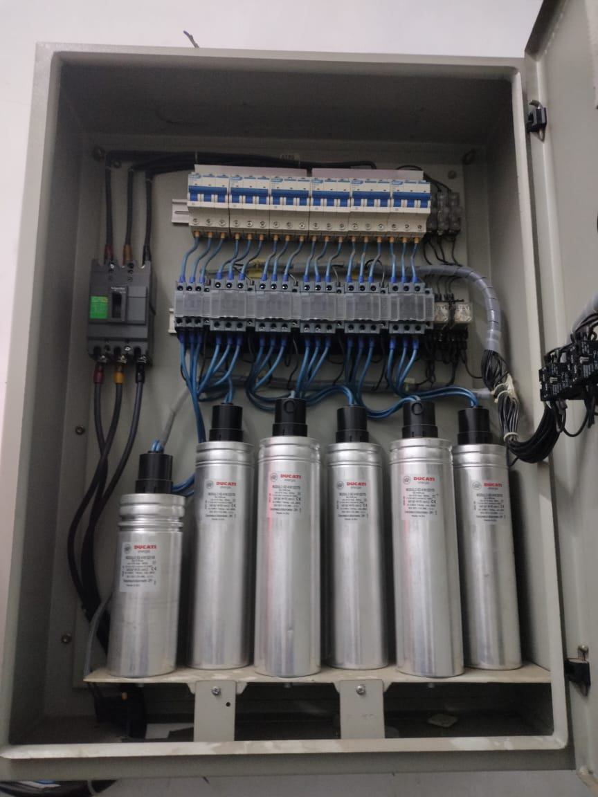
Bagian dalam Panel Kapasitor Bank
Bagian dalam sebuah panel kapasitor bank otomatis yang digunakan pada sistem kelistrikan industri untuk memperbaiki faktor daya (power factor). Pada bagian bawah panel terlihat enam buah kapasitor silinder merk Ducati yang merupakan komponen utama dalam sistem kapasitor bank..
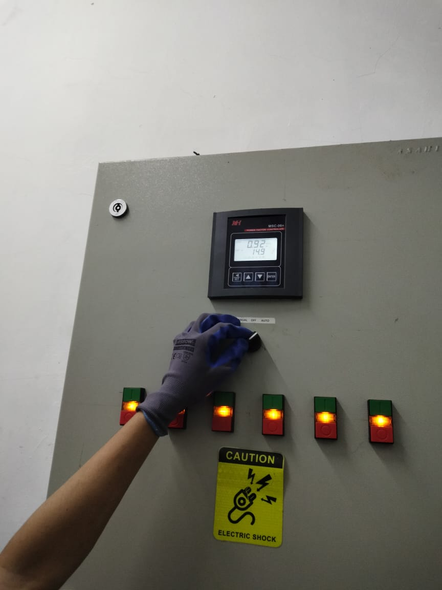
Implementation Result
Nilai cos φ yang awalnya sebesar 0,85 berhasil ditingkatkan menjadi sekitar 0,92 yang ditampilkan pada layar kontrol panel. Hasil ini menunjukkan bahwa pemasangan kapasitor telah bekerja dengan baik dalam mengurangi daya reaktif pada sistem, sehingga penggunaan daya listrik menjadi lebih efisien. Lampu indikator yang menyala menandakan beberapa step kapasitor aktif secara otomatis untuk menyesuaikan kebutuhan beban.
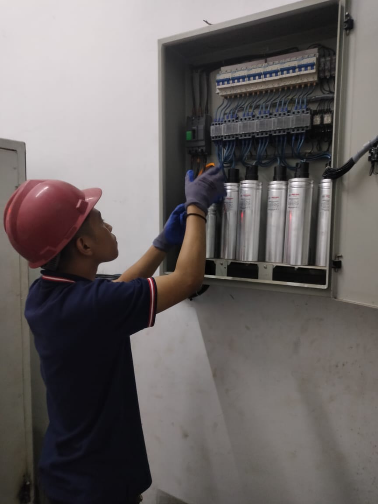
Proses Pemeriksaan Panel Kapasitor Bank
Dilakukan untuk memastikan kondisi panel kapasitor bank, termasuk pemeriksaan fisik, pengukuran nilai kapasitansi, serta pengecekan koneksi dan komponen untuk memastikan kinerja optimal.
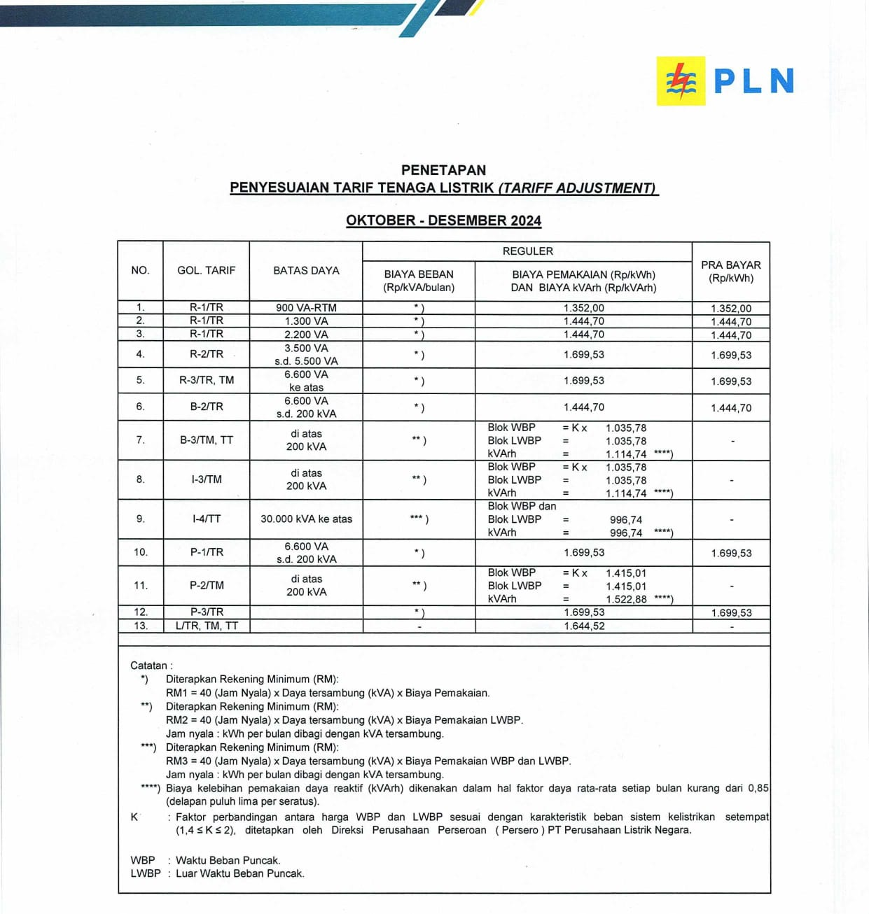
Penetapan penyesuaian tarif tenaga listrik PLN Oktober–Desember 2024
Dokumen tarif PLN menunjukkan bahwa pelanggan industri dapat dikenakan biaya tambahan jika faktor daya di bawah 0,85. Oleh karena itu pemasangan kapasitor bank sangat penting untuk mengurangi daya reaktif dan meningkatkan faktor daya.
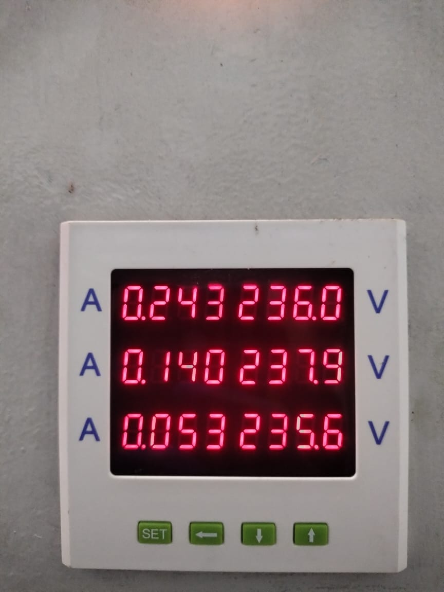
Tegangan dan Arus pada Indikator panel kapasitor bank
Secara keseluruhan, hasil pengukuran dan perhitungan ini menunjukkan bahwa kondisi sistem kelistrikan berada dalam keadaan cukup baik, stabil, dan efisien. Kapasitor bank mampu membantu meningkatkan kualitas daya listrik dengan memperbaiki faktor daya serta mengurangi beban daya reaktif pada instalasi listrik industri.
Prototipe Sistem Blower Otomatis Berbasis Mikrokontroler (ESP32)
Smart Temperature Control Berbasis ESP32
Proyek ini merupakan perancangan sistem blower otomatis berbasis ESP32 yang digunakan untuk mengontrol suhu dan sirkulasi udara secara otomatis. Sistem memanfaatkan sensor DHT11 untuk membaca suhu dan kelembapan ruangan, kemudian ESP32 akan mengendalikan relay sebagai aktuator blower. Ketika suhu melebihi batas tertentu, blower akan aktif secara otomatis dan akan mati ketika suhu kembali normal. Proyek ini membantu meningkatkan efisiensi penggunaan energi serta menjaga kestabilan suhu ruangan secara otomatis. Dalam pengembangan proyek ini, saya mempelajari integrasi sensor, kontrol relay, embedded systems, serta otomasi berbasis mikrokontroler menggunakan ESP32.
FITUR UTAMA
- Automatic Temperature Control
- DHT11 Sensor Integration
- Relay-based Automation
- Real-time Monitoring
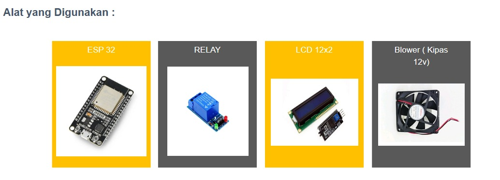
alat alat yang digunakan
alat alat yang digunakan dalam proyek ini meliputi ESP32 sebagai mikrokontroler utama, sensor DHT11 untuk pengukuran suhu dan kelembapan, relay untuk kontrol blower, serta komponen pendukung lainnya seperti breadboard, kabel jumper, dan power supply.
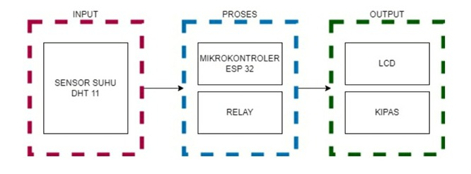
Diagram Blok Perancangan Sistem
Blok diagram sistem tersebut menunjukkan alur kerja sistem monitoring dan pengendalian suhu otomatis berbasis mikrokontroler ESP32. Sistem dibagi menjadi tiga bagian utama yaitu input, proses, dan output. Pada bagian input, sensor suhu DHT11 berfungsi untuk mendeteksi suhu lingkungan secara real-time. Data suhu yang diperoleh kemudian dikirim ke bagian proses, yaitu mikrokontroler ESP32 sebagai pusat pengendali sistem. ESP32 akan mengolah data suhu tersebut dan menentukan aksi yang harus dilakukan berdasarkan program yang telah dibuat. Pada bagian ini juga terdapat relay yang berfungsi sebagai saklar elektronik untuk mengontrol perangkat output. Selanjutnya, pada bagian output, LCD digunakan untuk menampilkan informasi suhu yang terbaca oleh sensor, sedangkan kipas berfungsi sebagai aktuator pendingin yang akan menyala secara otomatis ketika suhu melebihi batas tertentu
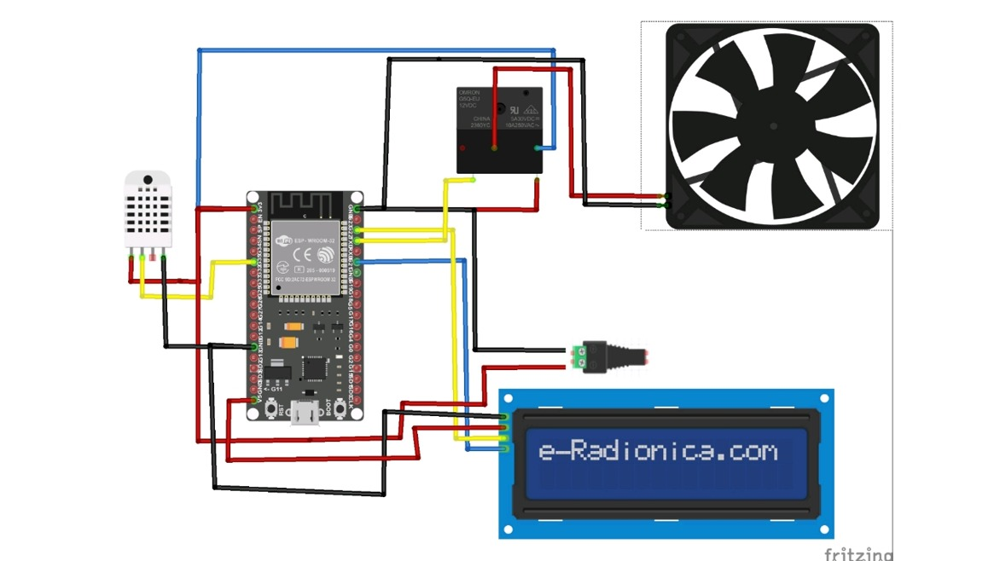
Desain Rangkaian Elektrik
desain rangkaian sistem blower otomatis berbasis mikrokontroler ESP32 yang dirancang menggunakan aplikasi Fritzing. Pada rangkaian ini, sensor DHT11 digunakan untuk mendeteksi suhu dan kelembapan ruangan, kemudian data tersebut diproses oleh ESP32 sebagai pusat pengendali sistem. Hasil pembacaan sensor ditampilkan secara real-time melalui LCD 16x2 sehingga pengguna dapat memantau kondisi suhu ruangan secara langsung. Sistem juga dilengkapi modul relay yang berfungsi sebagai saklar otomatis untuk mengontrol blower atau kipas DC berdasarkan suhu yang terdeteksi. Ketika suhu melebihi batas tertentu, ESP32 akan mengaktifkan relay sehingga blower menyala secara otomatis untuk membantu menurunkan suhu ruangan.
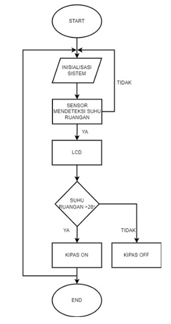
Diagram cara Kerja
Flowchart tersebut menjelaskan cara kerja sistem otomatis pengontrol kipas berdasarkan suhu ruangan. Proses dimulai dari Start, kemudian sistem melakukan inisialisasi. Setelah itu, sensor mendeteksi kondisi ruangan. Jika sensor berhasil mendeteksi, informasi ditampilkan pada LCD. Selanjutnya sistem memeriksa apakah suhu ruangan lebih dari 28°C. Jika ya, maka kipas menyala (ON), sedangkan jika tidak, maka kipas mati (OFF). Proses ini berlangsung secara berulang hingga sistem berakhir (End).
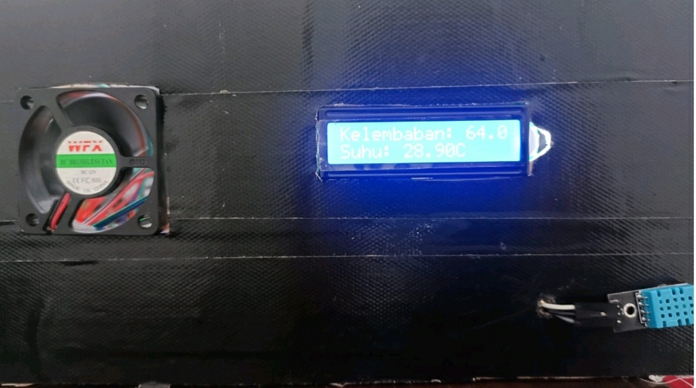
Hasil Pengujian
Hasil pengujian blower otomatis menunjukkan bahwa sensor berhasil membaca kondisi lingkungan dengan nilai kelembapan sebesar 64,0% dan suhu sebesar 28,9°C. Nilai suhu tersebut melebihi batas yang telah ditentukan pada sistem, yaitu 28°C, sehingga blower atau kipas otomatis berada pada kondisi menyala (ON) untuk membantu menurunkan suhu ruangan agar tetap stabil. Selain itu, nilai kelembapan yang terbaca menandakan kondisi udara berada pada tingkat kelembapan sedang, sehingga sistem monitoring dapat bekerja dengan baik dalam menampilkan data suhu dan kelembapan secara real-time melalui LCD.
Digital Portfolio Website
Personal Portfolio for IoT & Embedded Engineer
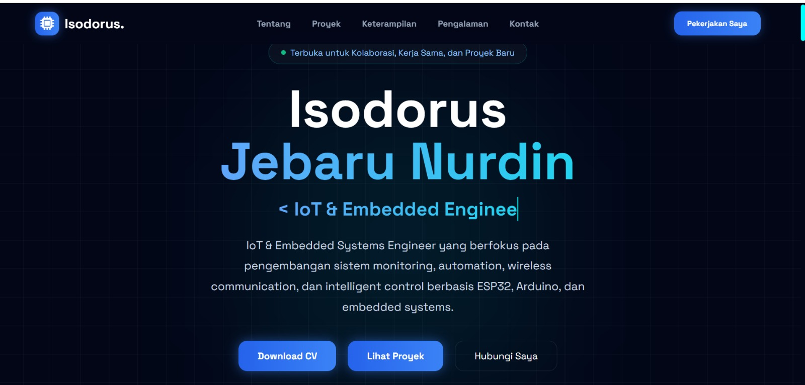
Website portofolio pribadi yang dirancang dan dikembangkan untuk menampilkan profil profesional, pengalaman, keterampilan, serta proyek-proyek yang telah dikerjakan. Website ini dibangun menggunakan HTML, CSS, dan JavaScript dengan desain modern, responsif, dan user-friendly. Selain sebagai media personal branding, website ini juga berfungsi sebagai pusat dokumentasi proyek dan media komunikasi profesional.
FITUR UTAMA
- Responsive Design
- Project Showcase
- Interactive Navigation
- Professional Portfolio
Pengalaman & Kepemimpinan
Ketua Organisasi Perkumpulan Muda Mudi Manggarai Bandung (PM3B)
April 2024 - Juni 2025Memimpin dan mengoordinasikan berbagai kegiatan organisasi daerah mahasiswa Manggarai di Bandung dengan fokus pada pengembangan solidaritas, komunikasi, dan kepemimpinan anggota. Bertanggung jawab dalam perencanaan serta pelaksanaan berbagai program kerja dan acara tahunan organisasi, termasuk kegiatan kebudayaan, sosial, pengabdian masyarakat, malam keakraban, serta forum pengembangan mahasiswa. Selain itu, aktif membangun kerja sama antaranggota dan meningkatkan koordinasi tim untuk menciptakan lingkungan organisasi yang aktif, kolaboratif, dan profesional.
Asisten Laboratorium - Praktikum Antena & Gelombang Mikro
Oktober 2025- Maret 2026bertanggung jawab dalam membantu proses praktikum mahasiswa pada bidang RF (Radio Frequency), sistem antena, dan gelombang mikro. Tugas yang dilakukan meliputi membimbing mahasiswa dalam pengoperasian alat ukur seperti Network Analyzer dan Spectrum Analyzer, menjelaskan konsep dasar propagasi gelombang elektromagnetik, parameter antena, serta teknik pengukuran dan analisis performa antena. Selain itu, turut melakukan setup perangkat praktikum, kalibrasi alat, troubleshooting teknis pada perangkat maupun rangkaian, serta memastikan seluruh kegiatan laboratorium berjalan dengan aman dan efektif. Dalam pelaksanaannya, juga berkolaborasi dengan dosen dan tim laboratorium untuk mendukung kelancaran proses pembelajaran, evaluasi praktikum, serta pengembangan pemahaman mahasiswa terhadap aplikasi sistem antena dan teknologi gelombang mikro
+ Pendidikan dan pengalaman lainnya akan segera ditambahkan.
Mari Bekerja Sama
Saya terbuka untuk peluang kerja, proyek IoT, embedded systems, automation, maupun kolaborasi pengembangan teknologi. Silakan hubungi saya melalui platform berikut.